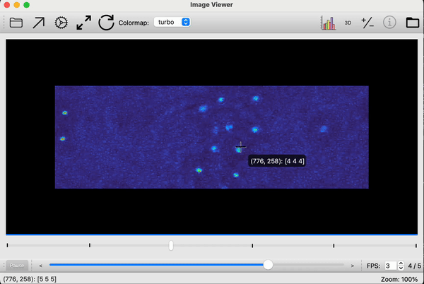
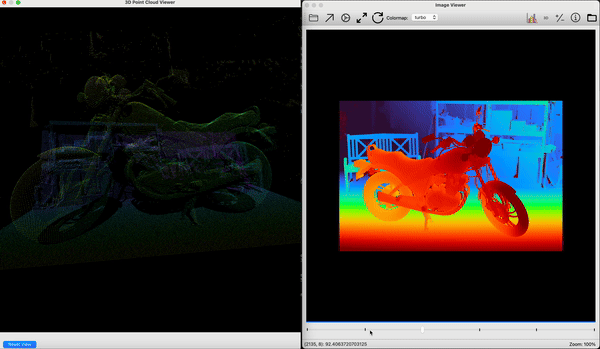
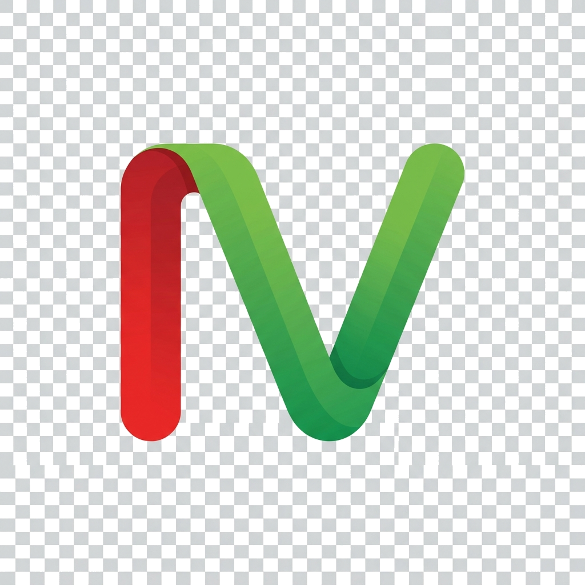

A cross-platform desktop viewer for raw camera dumps, optical-flow fields, scientific arrays, and AI-generated depth maps — without scripting.


Most desktop viewers stop at PNG, JPEG, and TIFF. ImageViewer treats raw sensor dumps, optical-flow fields, NumPy archives, and AI depth maps as first-class citizens — with live histograms, math transforms, and 3D visualization on top.
.raw, .f32, .uint16,
.u10/.u12/.u14,
.yuv, .nv12, and more. Resolution and dtype
are inferred or inherited between similar files.
Generate per-pixel depth from any image or video using Depth Anything 3. Choose from four model sizes; results save next to the source.
.flo visualization2-channel flow fields render with color-coded direction and histogram-driven contrast — surface subtle motion without writing a colormap script.
OpenGL-backed 3D surface view of any single-channel image. Rotate, pan, and zoom; updates live as you apply math transforms.
Drag-to-stretch contrast, percentile presets, and a math pane that
accepts NumPy expressions like np.log(x) or
x ** 0.5.
Open any number of windows, pick which images to compare, and zoom/pan them in lockstep. Crosshair shows per-image pixel values across all of them.
| Category | Extensions |
|---|---|
| Standard images | .png .jpg .jpeg .bmp .tiff .tif .gif .webp .heic .heif |
| Raw sensor data | .raw .bin .dat .f32 .f16 .uint8 .uint16 .u10 .u12 .u14 .yuv .nv12 .nv21 .rgb .rgba .bgr .bgra .yuyv .uyvy |
| Optical flow | .flo (Middlebury 2-channel) |
| Video | .mp4 .avi .mov .mkv .webm |
| NumPy archives | .npz (multi-array, with key picker) |
MIT-licensed. Runs on macOS, Windows, and Linux.